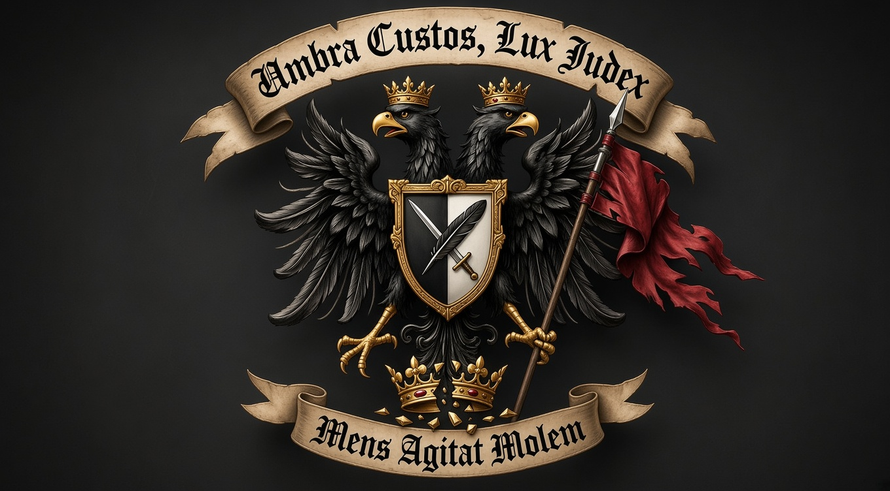
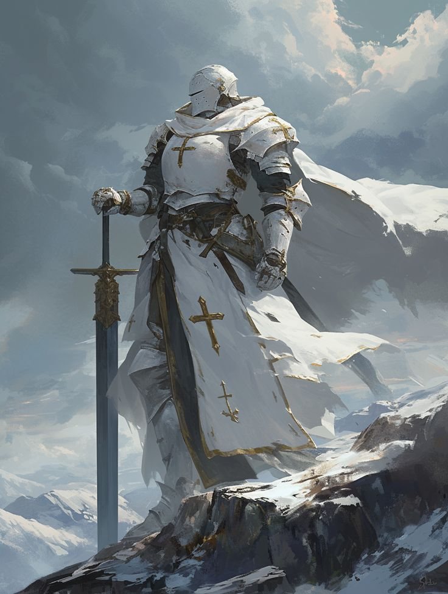
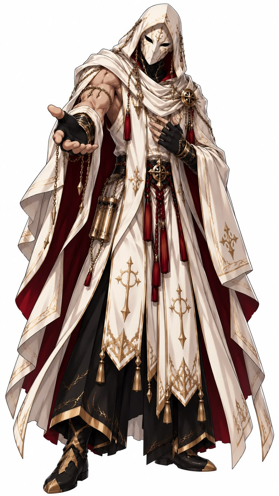
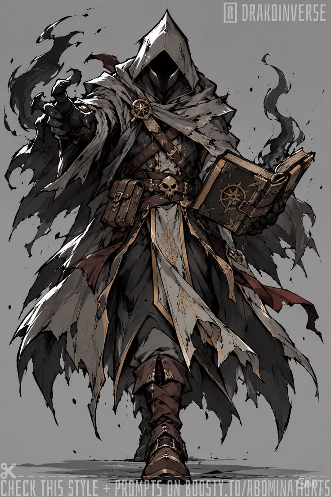
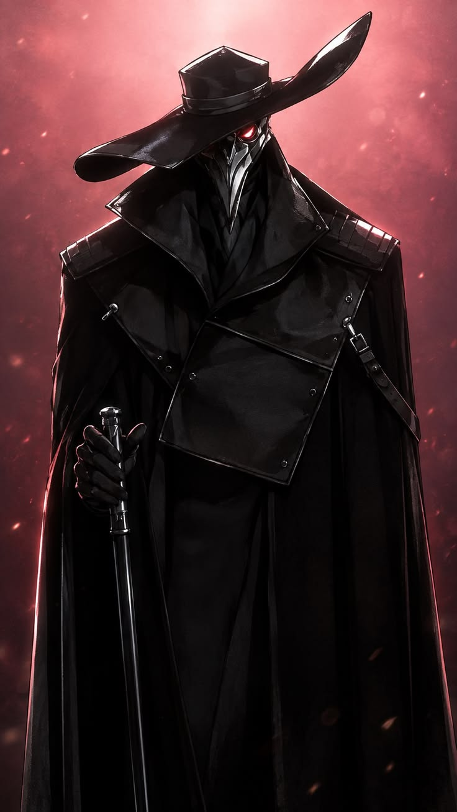
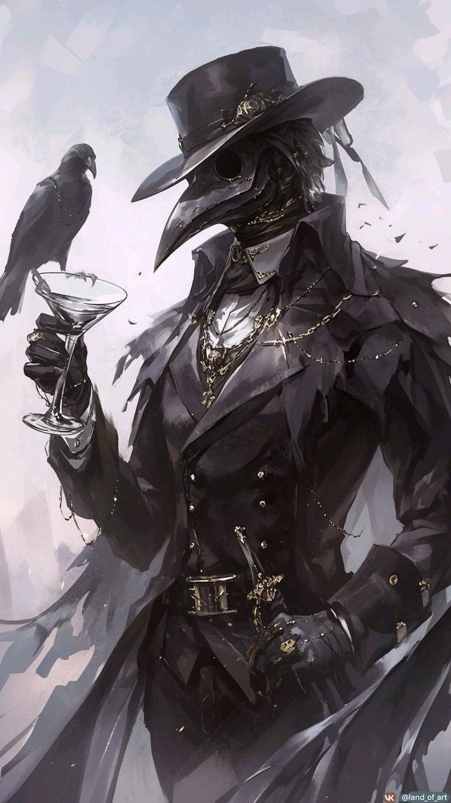
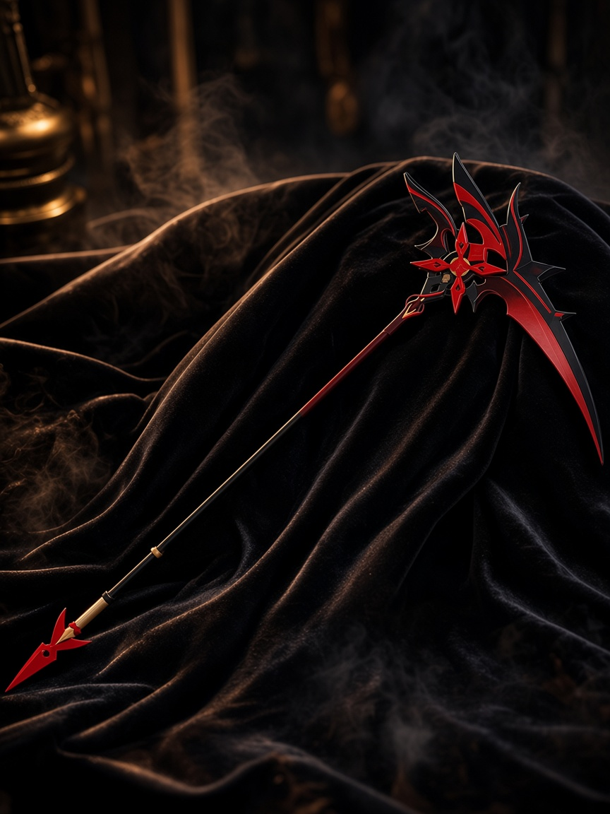
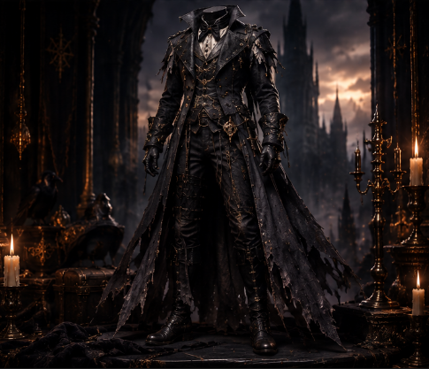

I
Джеймс Мориарти
Основатель
1755 — 1800 · правление до 1800
Основатель линии. Математик, стратег, архитектор ордена.

Архивы ордена
Наблюдатель входит без пароля.
Магистр и Глава — только по паролю.
В тени городских туманов, задолго до того, как имя Мориарти стало известным, родился дом, чья кровь текла сквозь века интриг.
Основатель рода — Джеймс Мориарти — появился на свет в 1755 году в обедневшем аристократическом доме Тумэн.
К концу XVIII века Мориарти уже контролировал сеть информаторов по всему континенту. Их девиз: «Umbra Custos, Lux Judex» — Тень — Страж, Свет — Судья.
В 1775 году основатель создал Орден тамплиеров — организацию, подчиняющуюся дому.
В 1795 году под командованием Джеймса Мориарти дом одержал победу в гражданской войне в доме Тумэн, за что получил часть территорий и основал собственный дом Мориарти.
«Мы правим из тени.» — из дневника основателя, 1791 г.
Так началась история дома, который предпочитал оставаться в тени, но чьё влияние ощущалось в каждом крупном событии.
Золотой век дома Мориарти — эпоха, когда дом стал невидимой осью власти.
Под руководством глав рода сеть охватывала академии, дворы, банки и теневые гильдии. Наблюдатели следили, Магистры управляли, Глава видел партию целиком.
Девиз дома на гербе: Mens Agitat Molem — Разум движет массой.
Те, кто носил бремя Главы. Линия дома Мориарти.
Основатель
1755 — 1800 · правление до 1800
Основатель линии. Математик, стратег, архитектор ордена.

Глава дома
1785 — 1820 · правление 1800 — 1820
Рыцарь ордена. Укрепил военную ветвь дома.

Глава дома
1800 — 1855 · правление 1820 — 1855
Связующее звено с Орденом тамплиеров. Хранитель клятв.

Глава дома
1835 — 1900 · правление 1855 — 1900
Хранитель архивов и рунических знаний.

Глава дома
1890 — 1970 · правление 1900 — 1970
Тень суда. Расширил сеть наблюдателей.

Глава дома
1955 — 2020 · правление 1970 — 2020
Тень при троне. Имя, которое не произносят вслух.

Глава дома
1999 — **** · правление с 2020
Ушёл за горизонт. Основатель революционного фронта.
Оружие и знаки, пережившие века.
Полуторник. Чёрный клинок, золотые руны, рубины в гарде. Символ власти Главы.

Имя утрачено. Красный и чёрный. Жатва, которой боятся даже враги дома.
Чёрный клюв, цепи и ворон. Лицо, которое носят в час казни и суда.

Парадный чёрный строй дома. Носится в часы суда и казни.
Те, кто предал орден. Их имена не стёрты — как предупреждение.
Предатель ордена
Предал дом. Приговор приведён в исполнение.

Предатель ордена
Ушёл за горизонт. Имя внесено в чёрный список ордена.
Ни один дом не стоит вечно без трещин. Предательства пришли изнутри — и оставили шрамы в архивах.
Имена и лица тех, кто предал, вынесены в «Предатели ордена». Здесь — хроника и приговор.
«Тень не прощает тех, кто пытается выйти на свет без разрешения.» — из кодекса дома
После великих потрясений дом ушёл в тень глубже, чем когда-либо.
Архивы рассеяны. Часть уничтожена. Часть ждёт тех, кого пригласит Магистр.
История не закончена. Она лишь закрыта для глаз недостойных.
Орден тамплиеров был создан в 1775 году Джеймсом Мориарти как организация, подчинённая дому.
Тамплиеры служили военной и духовной рукой Мориарти: клятвы, цепи и белые плащи скрывали тех, кто действовал по воле Главы.
После 2022 года орден существует лишь в архивах и памяти дома.
Umbra Custos, Lux Judex — Тень — Страж, Свет — Судья.
Mens Agitat Molem — Разум движет массой.
Отображаемое имя в архивах.
Только для Магистра и Главы.